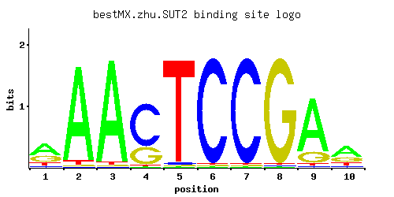

SUT2
YPR009W
Putative transcription factor; multicopy suppressor of mutations that cause low activity of the cAMP/protein kinase A pathway; highly similar to Sut1p
Best-performing DNA-binding model.

View and copy the recommended matrices ↘
A | 0.52 0.94 0.96 0.01 0.01 0.01 0.01 0.01 0.79 0.52 C | 0.09 0.01 0.01 0.70 0.02 0.97 0.97 0.01 0.02 0.08 G | 0.29 0.01 0.01 0.28 0.01 0.01 0.01 0.97 0.17 0.26 T | 0.10 0.04 0.02 0.01 0.96 0.01 0.01 0.01 0.02 0.14
A | 52 94 96 1 1 1 1 1 79 52 C | 9 1 1 70 2 97 97 1 2 8 G | 28 1 1 28 1 1 1 97 17 26 T | 10 4 2 1 96 1 1 1 2 14
A | 0.49 1.08 1.10 -3.47 -3.47 -3.47 -3.47 -3.47 0.90 0.49 C | -0.69 -2.89 -2.89 1.36 -2.20 1.68 1.68 -2.89 -2.20 -0.81 G | 0.48 -2.89 -2.89 0.44 -2.89 -2.89 -2.89 1.68 -0.06 0.37 T | -1.16 -2.08 -2.77 -3.47 1.10 -3.47 -3.47 -3.47 -2.77 -0.83
Alternative candidate matrices 2
Historical matrix candidates from the original ScerTF database. Expand a source to inspect its original logo, scores, and matrix values.
SUT2Foat et. al.P = 1View matrix ↘
SUT2Zhao and StormoP = 0.06105View matrix ↘
Gene-level annotations and interactions.
Genes bound in ChIP-chip experiments 8 genes
YAR050W, YDL206W, YDR424C, YDR425W, YKR054C, YKR055W, YMR225C, YNL214W
Genes affected by TF deletion 62 genes
YHR146W, YOR065W, YNR060W, YDL037C, YJR112W, YOR317W, YML027W, YMR314W, YFR006W, YNL180C, YBL058W, YLR183C, YNL300W, YIL124W, YML121W, YAL044C, YOR043W, YOR264W, YFR041C, YKL085W, YLR099C, YLR069C, YOR074C, YGR220C, YHR215W, YNR035C, YPL118W, YPL092W, YGR012W, YOR354C, YBR264C, YER064C, YGR253C, YMR263W, YNL310C, YKR093W, YNL065W, YKL096W, YNL289W, YPL031C, YPL066W, YLR294C, YNL098C, YNL100W, YGR139W, YNL290W, YPL004C, YOR367W, YPL163C, YBR026C, YLR297W, YGL255W, YMR034C, YOL038W, YHR137W, YLR079W, YLR049C, YDL029W, YBR149W, YOL101C, YPR009W, YNL007C
Predicted TF–TF partners 4 genes
GSM1, MIG3, STB4, YER184C